Valheim item list
Where does it drop, which biome do you need and which tool? This list covers 864 items – materials, food, weapons, armour and trophies. For each item you see where it comes from (trees, ore deposits, creatures, chests, traders), the tool you need, the recipe and what it is used for. All data is read directly from the game files (version 1.0.21).
No item found.
Materials
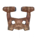
Asksvin Pelvis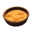
Barley Wine Base: Fire Resistance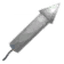
Basic Fireworks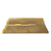
Bronze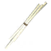
Candle Wick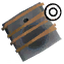
Cast: Nord Buckler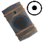
Cast: Nord Shield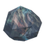
Flametal Ore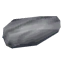
Grausten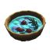
Mead Base: Frost Resistance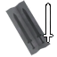
Mould: Nord Greatsword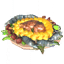
Mushrooms Galore á la Mistlands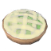
Uncooked Roasted Crust Pie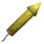
Yellow FireworksFood & potions
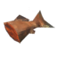
Cooked Fish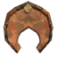
Cooked Serpent Meat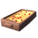
Oven Pancake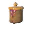
Queen's JamWeapons, tools & ammo
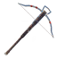
Arbalest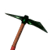
Black Metal Pickaxe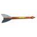
Bloodgold Bolt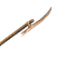
Bronze Atgeir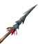
Carapace Spear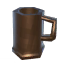
Dvergr Tankard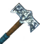
Frostner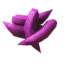
Misty Fishing Bait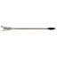
Obsidian Arrow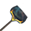
Snow Shovel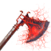
Thunderblood Axe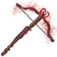
Thunderblood Crossbow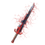
Thunderblood Dagger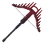
Wound RipperArmour, shields & accessories
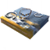
Blue Tunic with Beads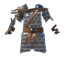
Iron Scale Mail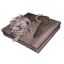
Loincloth of the Bear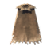
Lox Cape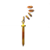
Neckstabber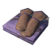
Trousers of the CallerTrophies
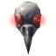
Fallen Valkyrie Trophy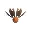
Fuling Shaman Trophy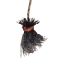
Kvastur Lava Blob Trophy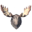
Moose Trophy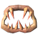
Morgen Trophy